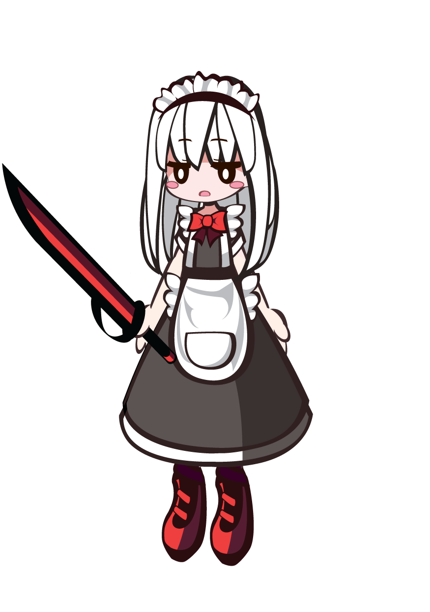

載入中…
人物圖片載入失敗，可能是開啟方式讓圖片路徑對不到，或網路暫時不穩。
舞台背景
下載的 PNG 是 875 × 1242 透明底，不含舞台背景，方便再拿去合成或印出來。
隨機搭配一定會配齊頭髮、表情、外套和下裝，不會缺件；頭髮和眼睛的顏色也會一起隨機。
頭髮顏色 原色
只有 _0（後髮）和 _2（瀏海）會變色，_1 的陰影部分維持原樣。
眼睛顏色 原色
只有表情的 _1 圖層（眼白）會變色，_0 和 _2 維持原樣。